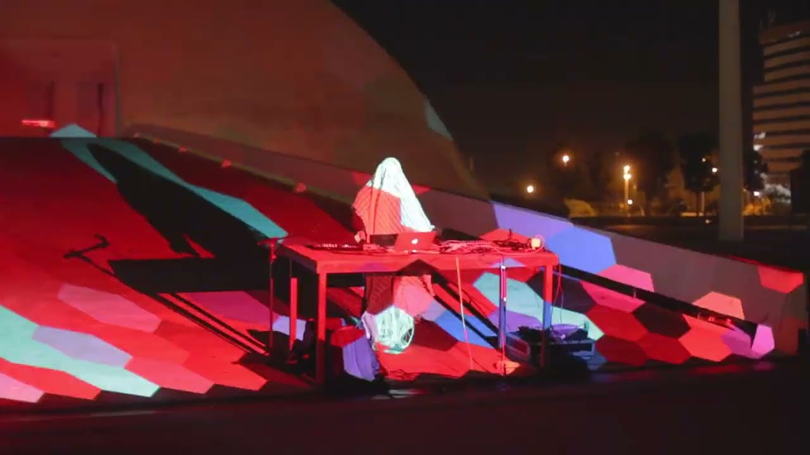
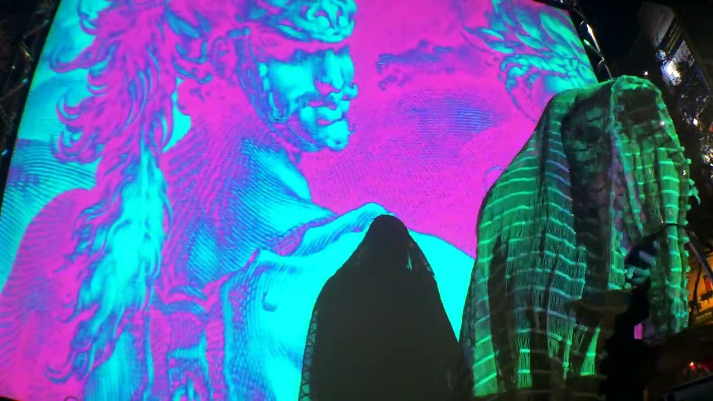

Sábio ao Contrário
Doppelgänger Sage
Alexandre Rangel, 2014-Alexandre rANGEL encarna a persona do Sábio ao Contrário em uma performance-ritual de remix de filosofia e religião do Ocidente e do Oriente. Música eletrônica experimental, uma leitura de tradução livre da obra de filosofia chinesa Tao Te Ching e animações de ilustrações religiosas do século XVII. As ilustrações fazem parte de iniciativa de uso livre do Museu Nacional da Holanda (Rijksmuseum). Alexandre rANGEL embodies the Contrary Sage persona in a ritual-performance remix of Western and Eastern philosophy and religion. Experimental electronic music, a free-translation reading of the Chinese philosophy classic Tao Te Ching, and animations of 17th-century religious illustrations from the Rijksmuseum open-access initiative.

Museu Nacional da República
Brasília, 2015National Museum of the Republic
Brasília, 2015Intervenções Urbanas
Sábio Ao Contrário - Gravação Documentário Intervenções UrbanasUrban Interventions
Contrary Sage — recording for the Urban Interventions documentary
Festival Sesc de Inverno
Petrópolis, Teresópolis e Nova Friburgo, 2015Registro feito em Nova Friburgo, no dia 26 de julho, quando a Igreja Católica celebra a memória de Santa Ana e São Joaquim, pais de Nossa Senhora e avós de Jesus. Nesta data celebra-se ainda o Dia dos Avós, uma vez que os santos são padroeiros deles. Ouve-se o buzinasso da procissão.
Festival Sesc de Inverno
Petrópolis, Teresópolis e Nova Friburgo, 2015Registro feito em Nova Friburgo, no dia 26 de julho, quando a Igreja Católica celebra a memória de Santa Ana e São Joaquim, pais de Nossa Senhora e avós de Jesus. Nesta data celebra-se ainda o Dia dos Avós, uma vez que os santos são padroeiros deles. Ouve-se o buzinasso da procissão.